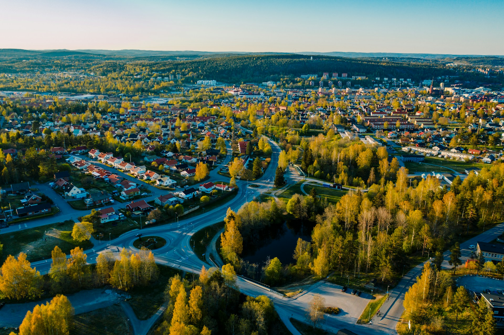

EU-politik och våtmarker
Våtmarker lagrar omkring 30 % av världens markbundna kol, trots att de bara täcker cirka 6 % av jordens landyta. De fungerar därför som viktiga kolsänkor och spelar en stor roll för klimatet. När våtmarker dräneras eller förstörs frigörs det lagrade kolet och släpps ut i atmosfären som koldioxid. I Europa är hela 50 % av alla våtmarker redan dränerade eller förstörda (Suarez-Rojas & Widmark, 2025).
Trots detta splittras ansvaret för våtmarkerna mellan flera politikområden inom EU: vattenhantering, bevarande av arter och habitat, klimatpolitik och jordbruk. En komplex väv av lagar och direktiv påverkar hur våtmarker förvaltas, men utan tydlig samordning mellan sektorerna (Klusmann et al., 2026).
Nya krav och bestämmelser
Inom EU har våtmarker länge skyddats genom naturdirektiven och vattendirektivet, som bland annat kräver god ekologisk status i vattenförekomster. Trots dessa regelverk har skyddet inte varit tillräckligt för att stoppa den pågående exploateringen (Klusmann et al., 2026).
Som svar på detta antog EU år 2024 Nature Restoration Regulation (NRR, förordning 2024/1991). Det är den första EU-lagen som ställer juridiskt bindande krav på ekosystemrestaurering, med målet att minst 20 % av EU:s land- och havsområden ska restaureras till 2030 (Klusmann et al., 2026).
Exploaterad våtmark via vägar per år
Diagrammet visar hur mycket våtmark som exploaterats av vägar mellan 2020 och 2024.
Viktigt
Data för 2025 och 2026 saknas eftersom SCB:s statistik (MI1303) sammanställs per län med fördröjning. Fullständiga uppgifter publiceras vanligen först ett till två år efter mätperioden.
Infrastruktur och klimatpåverkan
Trots den skyddande lagstiftningen visar vår data att exploateringen av våtmarker genom vägar, järnvägar och byggnader fortsätter att öka. En central orsak är att politiken saknar samstämmighet mellan sektorerna. Transportinfrastruktur planeras ofta utan tillräcklig hänsyn till våtmarkernas ekologiska funktion (Suarez-Rojas & Widmark, 2025).
Konsekvenserna sträcker sig bortom den mark som fysiskt tas i anspråk. När våtmarker dräneras för vägbyggen frigörs stora mängder lagrad koldioxid. Hälften av EU:s torvmarker är redan dränerade och dessa ansvarar för cirka 25 % av de antropogena koldioxidutsläppen (Suarez-Rojas & Widmark, 2025). Zetterberg et al. (2004) visade att den ackumulerade klimatpåverkan från dränerad torvmark i Sverige över tid är i nivå med fossila bränslen som naturgas.
